Analiza rješenja · JOI Spring Camp 2026 · Dan 1
Vrt 3
O ovom članku
Tekst je prijevod službene japanske prezentacije rješenja, preoblikovan u članak. Slajdovi su ugrađeni kao slike; natpis pod svakim slajdom je prijevod teksta na njemu. Dijelovi označeni kao trenerska napomena nisu u izvornoj prezentaciji — dodani su da popune korake koje slajdovi preskaču ili samo skiciraju.
Slajdovi
Zadatak
izvorni slajdovi 1–5
-
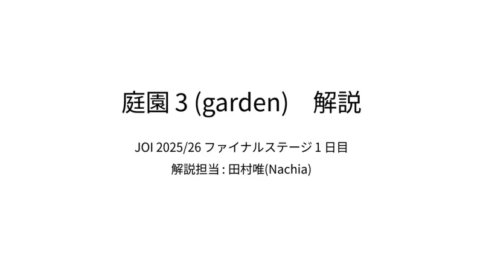
1Naslov; Nachia. -
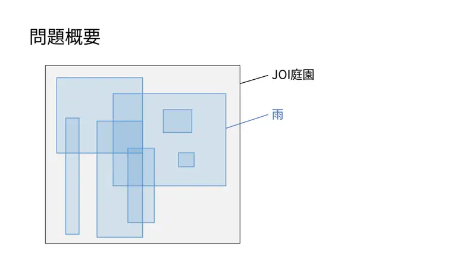
2JOI vrt, kiša. -
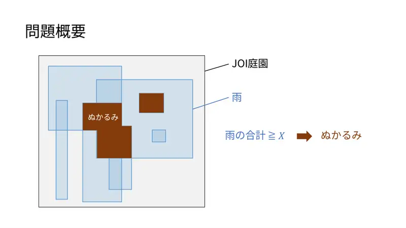
3Zbroj kiše $\ge X$ ⇒ blato. -
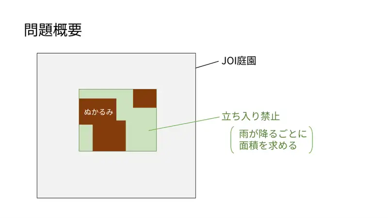
4Blato ⇒ zabranjeno područje; nakon svake kiše nađi površinu. -
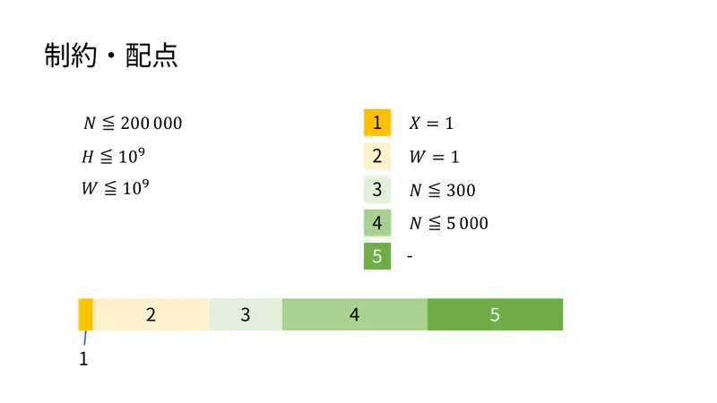
5Ograničenja i podzadaci.
← → tipke ili klik na sliku
Podzadaci 1 i 3 18 bodova
Koraci algoritma
Rubovi i kompresija
izvorni slajdovi 6–9
-
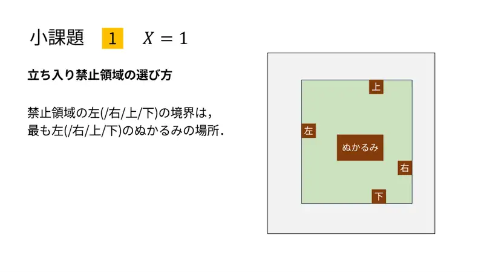
6Lijeva/desna/gornja/donja granica zabranjenog područja = najlijevije/… blato. -
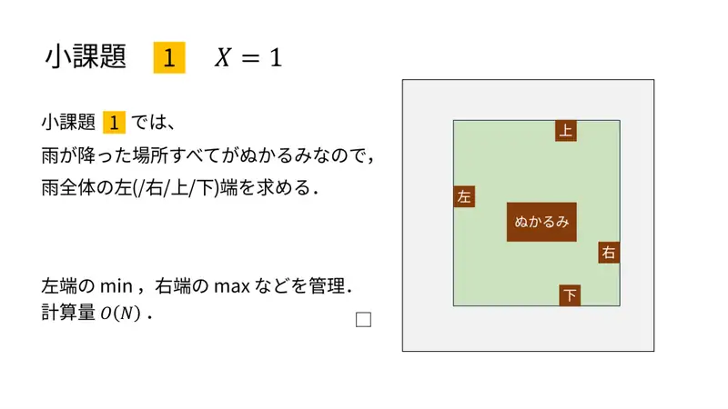
7$X=1$: sve zaliveno je blato; drži min lijevih rubova, max desnih itd. $O(N)$. -
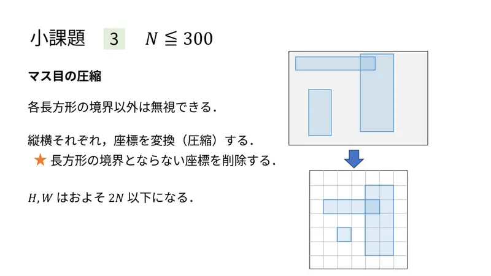
8$N\le300$: bitne su samo granice pravokutnika; komprimiraj po obje osi — $H,W\lesssim2N$. -
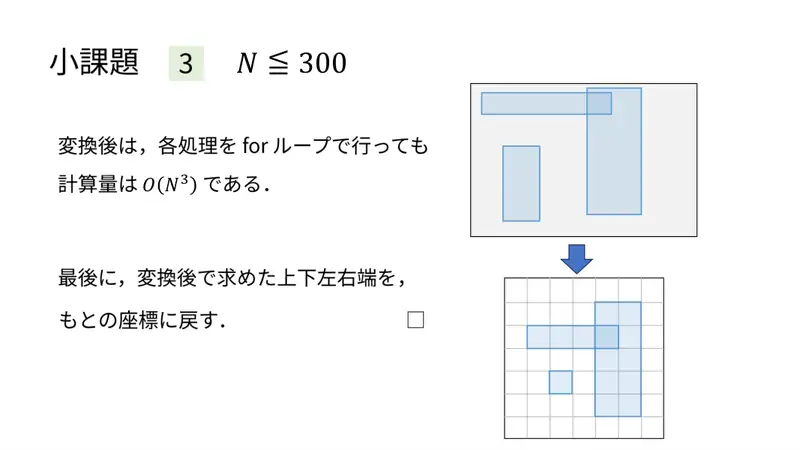
9For-petlje $O(N^3)$; na kraju vrati granice u izvorne koordinate.
← → tipke ili klik na sliku
Podzadatak 2 24 boda
Koraci algoritma
W = 1: segmentno stablo
izvorni slajdovi 10–12
-
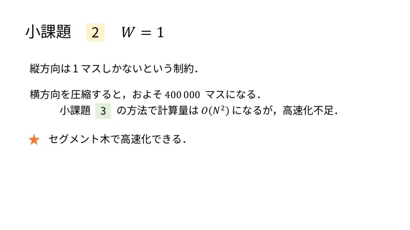
10Jedan stupac; nakon kompresije $\approx4\cdot10^5$ polja; $O(N^2)$ presporo; segmentno stablo. -
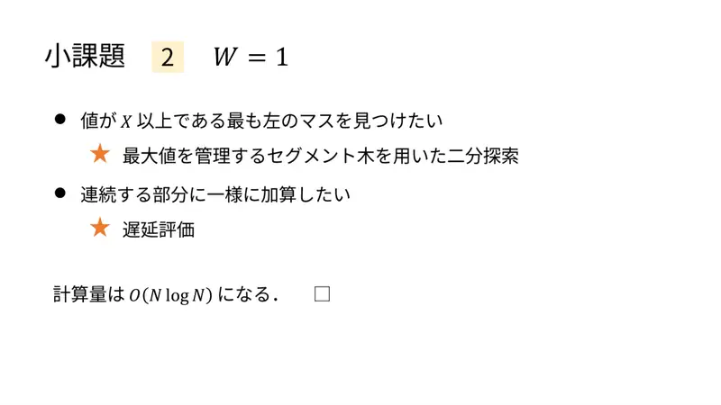
11Najlijevije polje $\ge X$: binarno traženje po stablu maksimuma; intervalno dodavanje — lijena evaluacija; $O(N\log N)$. -
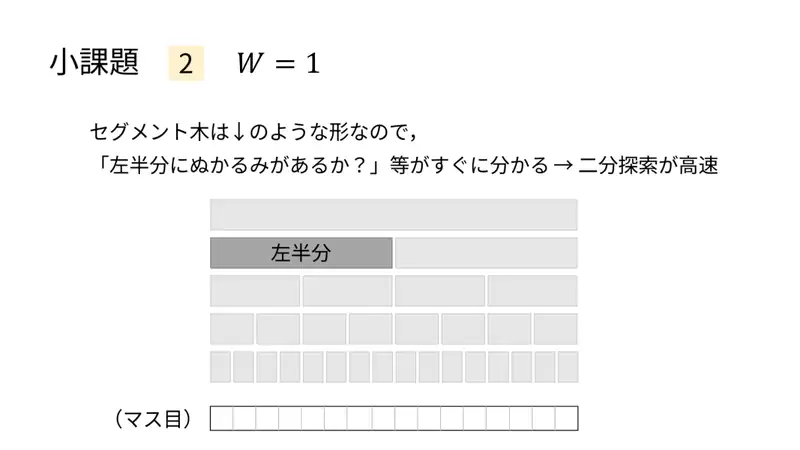
12„Ima li blata u lijevoj polovici?” odmah iz čvora ⇒ brzo binarno traženje.
← → tipke ili klik na sliku
Podzadatak 4 30 bodova
Koraci algoritma
Podijeli pa vladaj po vremenu
izvorni slajdovi 13–19
-
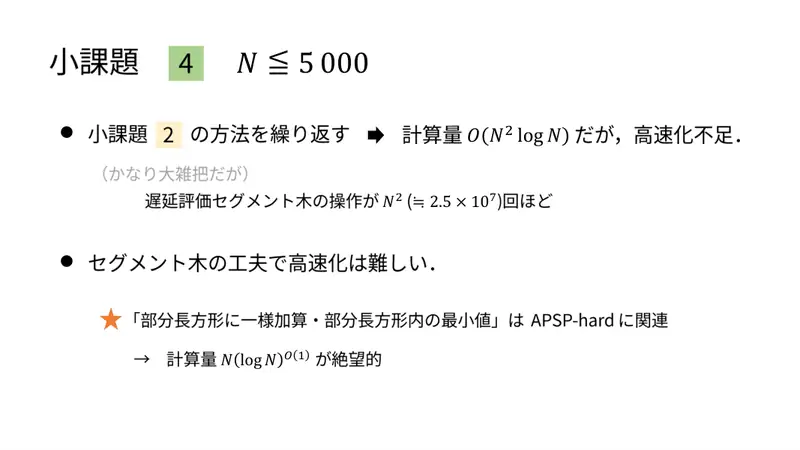
13Ponavljanje metode 2 po $k$: $O(N^2\log N)$, presporo; 2D „dodaj/min” srodno APSP-teškom ⇒ $N^2$ lijenih operacija ($\approx2.5\cdot10^7$). -
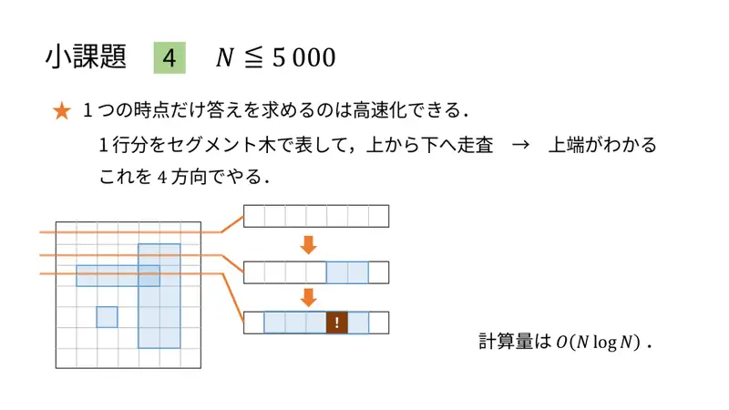
14Za jedan trenutak brzo: red u segmentnom stablu, sweep odozgo ⇒ gornja granica; $O(N\log N)$; 4 smjera. -
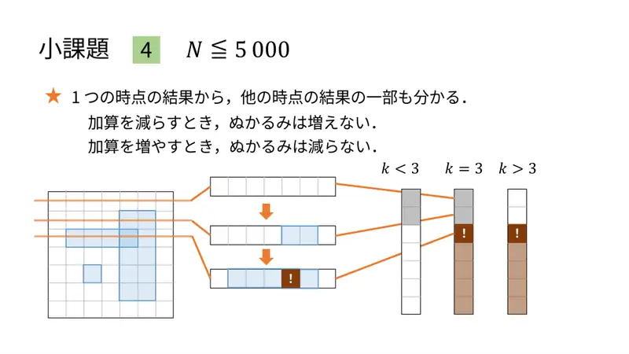
15Iz jednog trenutka znamo dio ostalih: manje kiše ⇒ ne više blata; više kiše ⇒ ne manje ($k\lt3$, $k=3$, $k\gt3$). -
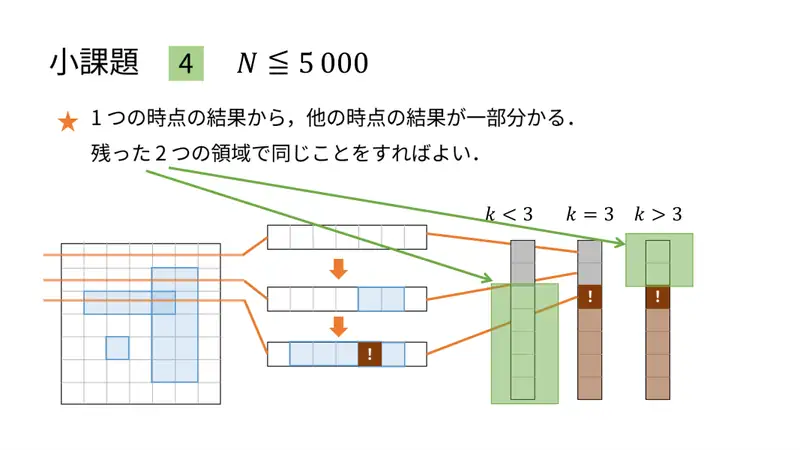
16Preostala dva područja riješi rekurzivno. -
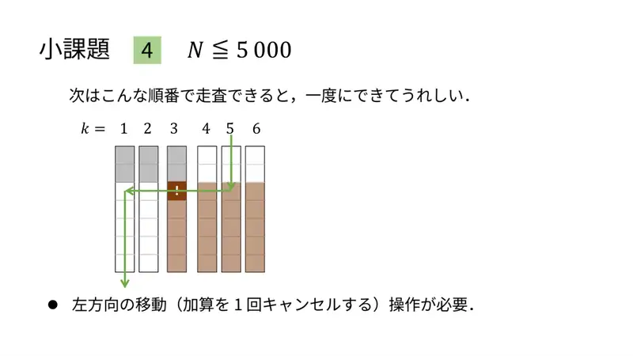
17Poredak obilaska da se sve radi u jednom prolazu; treba „otkaži jedno dodavanje”. -
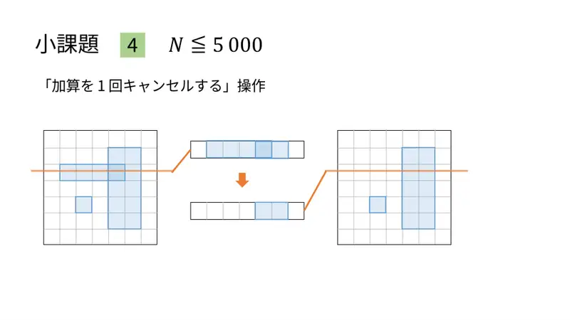
18Otkazivanje dodavanja. -
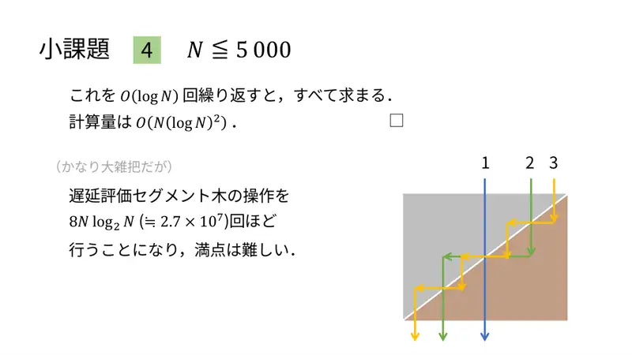
19$O(\log N)$ razina ⇒ $O(N\log^2N)$; $\approx8N\log^2N\approx2.7\cdot10^7$ lijenih operacija — puni bodovi teški.
← → tipke ili klik na sliku
Podzadatak 5 28 bodova
Koraci algoritma
Jedan prolaz od k = N
izvorni slajdovi 20–22
-
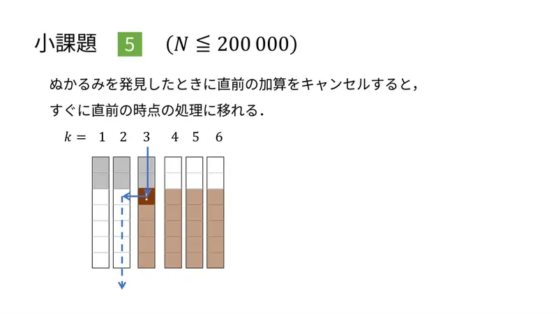
20Kad otkriješ blato, otkaži posljednje dodavanje i odmah prijeđi na prethodni trenutak. -
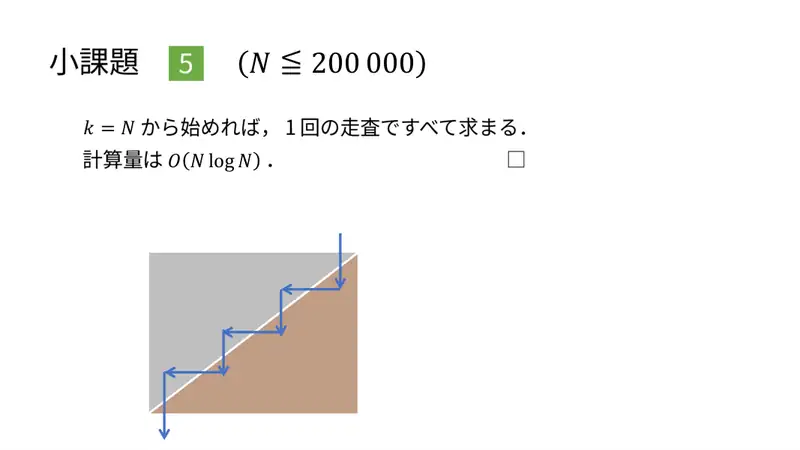
21Kreni od $k=N$: sve u jednom prolazu, $O(N\log N)$. -
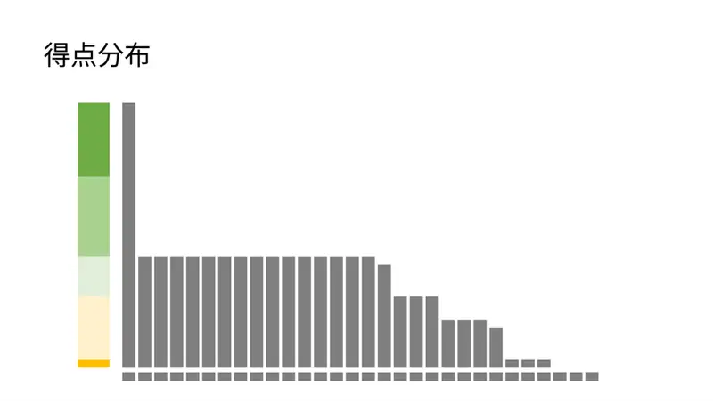
22Raspodjela bodova.
← → tipke ili klik na sliku
Sažetak
- Četiri granice zasebno; kompresija; sweep po retcima s lijenim stablom nad stupcima.
- Granica je monotona u $k$: od $k=N$ otkazuj posljednju kišu pri pojavi blata — jedan prolaz, $O(N\log N)$.